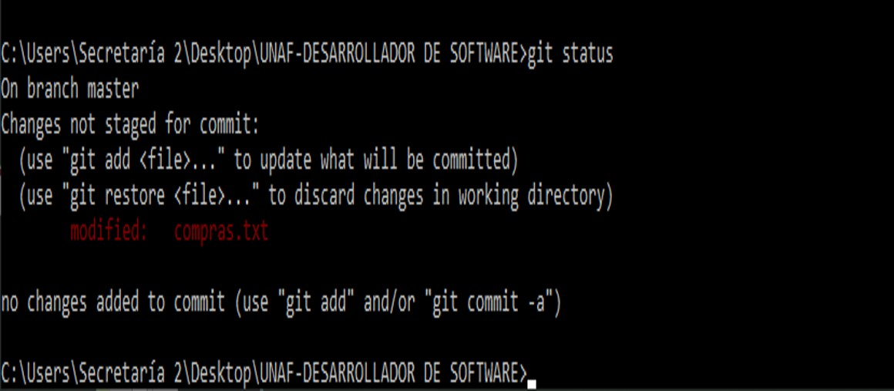

Git es un sistema de control de versiones distribuido de código abierto diseñado para ser rápido y eficiente.
Un sistema de control de versiones permite a sus usuarios almacenar revisiones diferentes de un mismo archivo y compararlas, restaurarlas y a veces mezclarlas.
Comparado con sistemas de control de versión antiguos como SVN o CVS, Git no necesita de un repositorio (lugar donde se alojan los archivos y sus versiones) central. Esto es lo que lo hace un sistema distribuido lo cual da una flexibilidad imposible con otros sistemas.
Los repositorios de cada usuarios son un clon completo y no una copia parcial de la última versión, esto permite, entre otras cosas, trabajar en modo offline, para luego, en caso de ser necesario, sincronizar los cambios con un repositorio remoto (trabajo colaborativo).
Git tiene tres estados principales en los que se pueden encontrar tus archivos: confirmado (committed), modificado (modified), y preparado (staged).
Confirmado: Significa que los datos están almacenados de manera segura en nuestro repositorio local.
Modificado: Significa que modificamos el archivo pero todavía no lo hemos confirmado a nuestro repositorio.
Preparado: Significa que marcamos un archivo modificado en su versión actual para que vaya en tu próxima confirmación.
Git status:Es un comando en Git que se utiliza para verificar el estado actual de tu repositorio de Git. Cuando ejecutas git status, obtienes información sobre qué archivos han sido modificados, agregados, eliminados o están en un estado pendiente de ser confirmados en tu proyecto
Git add: Acepta otro tipo de parámetros que nos serán útiles para trabajar con varios archivos a la vez, por ejemplo:
Git add *.jpg: Agregará todos los archivos cuyo nombre termine en .jpg al área de stage.
Git add ruta/a/directorio: Agregará todos los archivos del directorio al área de stage.
Git add . : Agregará todos los archivos modificados y/o no trackeados al área de stage.
Git commit: confirma los cambios del área de stage y los guarda en el repositorio. El parámetro -m es requerido y se utiliza para asociar un mensaje al commit que estemos haciendo. Este mensaje va siempre entre comillas dobles. Es muy importante que los mensajes sean lo suficientemente descriptivos como para que si el día de mañana revisamos la historia de nuestro repositorio sepamos donde se hizo cada cambio o conjunto de cambios.
Git pull:El comando git pull se utiliza para traer cambios desde un repositorio remoto a tu repositorio local. Cuando ejecutas git pull, Git buscará cambios en el repositorio remoto y los fusionará automáticamente con tu rama local. Es una forma de mantener tu rama local actualizada con los cambios realizados por otros colaboradores en el repositorio remoto.
Git push:El comando git push se utiliza para enviar tus cambios locales a un repositorio remoto. Cuando ejecutas git push, estás compartiendo tus modificaciones locales con otros colaboradores del proyecto al subirlas al repositorio remoto. Esto permite mantener sincronizado el trabajo de diferentes personas en un proyecto Git.
Git log: Revisa el historial de nuestro repositorio